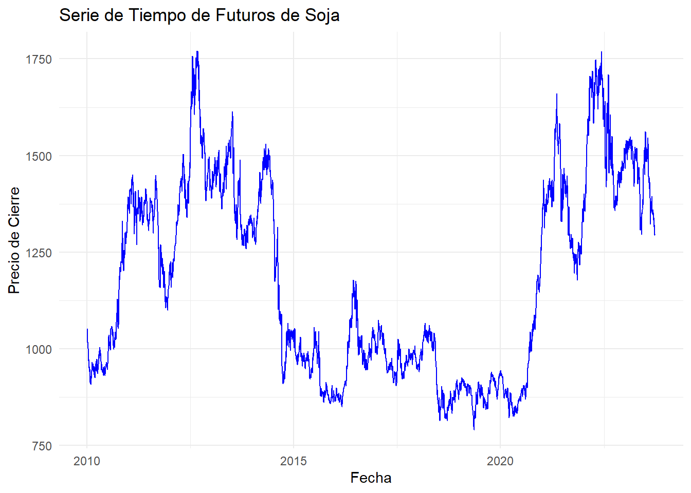

Chapter 5 Analisis Exploratorio
# Cargar la biblioteca quantmod
library(quantmod)
# Especificar el símbolo para futuros de soja
symbol <- "ZS=F"
# Descargar los datos históricos desde el 1 de enero de 2010 hasta hoy
getSymbols(symbol, from = "2010-01-01", to = Sys.Date(), auto.assign = TRUE)## [1] "ZS=F"# Crear un data frame con la serie de tiempo
soybean_data <- data.frame(Date = index(get(symbol)),
Open = Op(get(symbol)),
High = Hi(get(symbol)),
Low = Lo(get(symbol)),
Close = Cl(get(symbol)),
Volume = Vo(get(symbol))
)
# Eliminar filas con valores NA
soybean_data <- na.omit(soybean_data)
head(soybean_data)## Date ZS.F.Open ZS.F.High ZS.F.Low ZS.F.Close ZS.F.Volume
## 2010-01-04 2010-01-04 1043.00 1065.50 1041.25 1049.50 25947
## 2010-01-05 2010-01-05 1047.00 1056.00 1042.00 1052.25 21073
## 2010-01-06 2010-01-06 1050.00 1058.50 1042.75 1050.50 17567
## 2010-01-07 2010-01-07 1050.50 1052.00 1016.50 1017.75 11750
## 2010-01-08 2010-01-08 1018.25 1018.25 1005.00 1013.00 11750
## 2010-01-11 2010-01-11 1014.00 1022.00 997.50 1001.75 11750# Cargar la biblioteca xts
library(xts)
# Crear una serie de tiempo xts a partir del data frame soybean_data
soybean_xts <- xts(soybean_data[, -1], order.by = soybean_data$Date)
# Verificar la serie de tiempo
head(soybean_xts)## ZS.F.Open ZS.F.High ZS.F.Low ZS.F.Close ZS.F.Volume
## 2010-01-04 1043.00 1065.50 1041.25 1049.50 25947
## 2010-01-05 1047.00 1056.00 1042.00 1052.25 21073
## 2010-01-06 1050.00 1058.50 1042.75 1050.50 17567
## 2010-01-07 1050.50 1052.00 1016.50 1017.75 11750
## 2010-01-08 1018.25 1018.25 1005.00 1013.00 11750
## 2010-01-11 1014.00 1022.00 997.50 1001.75 11750## [1] "xts" "zoo"# Acceder a la columna "ZS.F.Close" en soybean_xts
close_prices <- soybean_xts[, "ZS.F.Close"]
# Imprimir las primeras filas de la columna Close
print(head(close_prices))## ZS.F.Close
## 2010-01-04 1049.50
## 2010-01-05 1052.25
## 2010-01-06 1050.50
## 2010-01-07 1017.75
## 2010-01-08 1013.00
## 2010-01-11 1001.75## Warning: package 'ggplot2' was built under R version 4.2.3# Crear un gráfico de serie de tiempo
ggplot(data = NULL, aes(x = index(close_prices), y = close_prices)) +
geom_line(color = "blue") +
labs(x = "Fecha", y = "Precio de Cierre", title = "Serie de Tiempo de Futuros de Soja") +
theme_minimal()## Don't know how to automatically pick scale for object of type <xts/zoo>.
## Defaulting to continuous.